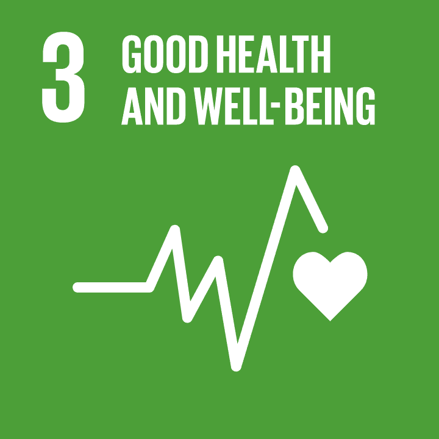

Facts and Figures
Global health progress has been made in recent years,
with 146 out of 200 countries meeting or on track to meet
the SDG target on under-5 mortality. However, insufficient
progress has been made in reducing maternal mortality and
expanding universal health coverage. The COVID-19 pandemic
and ongoing crises have impeded progress towards Goal 3.
Increased investment in health systems is needed to support
countries' recovery and build resilience against future health threats.

Good health and Well-Being
Health improvements have been made in recent years, with
146 out of 200 countries meeting or on track to meet the
Sustainable Development Goals (SDG) target on under-5 mortality.
However, inequalities in healthcare access persist, and the
COVID-19 pandemic has impeded progress towards Goal 3. To
address these issues, increased investment in health systems
is needed to support countries' recovery and build resilience
against future health threats.
Accessing Essential Health Services
Many people around the world still do not have access to
essential healthcare services. It is imperative to address
discrepancies in order to close this gap and guarantee equitable
access to healthcare. To achieve the Sustainable Development
Goal goals and our shared goal of Health for All, we must address
a number of health determinants, such as environmental and commercial
factors.